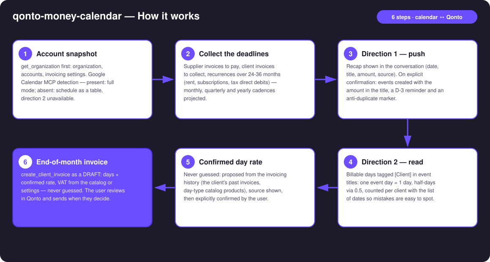
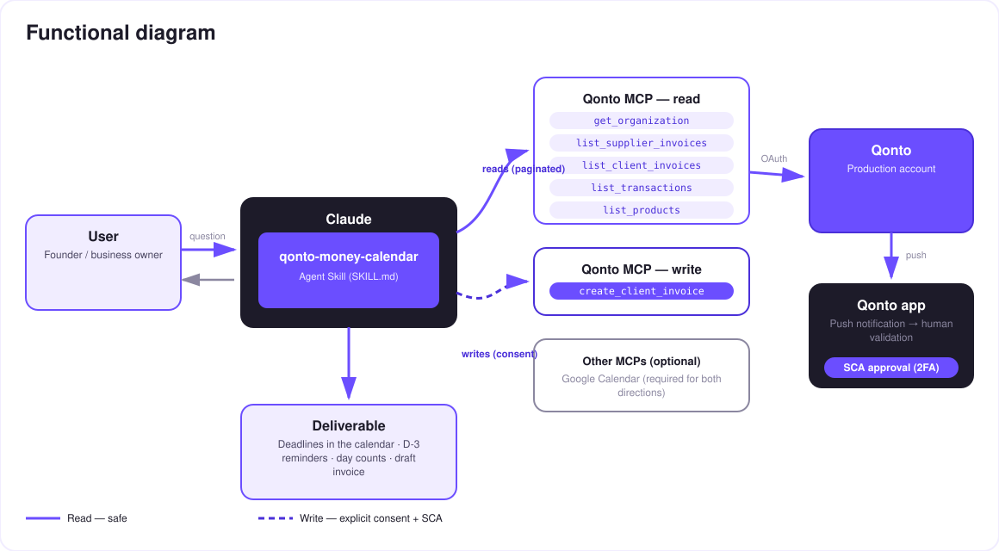

Your cash flow in your calendar, both ways — deadlines become events, tagged days become invoices.
Money lives in deadlines, not in lists. And you live in your calendar — not in an accounting export. The skill turns Google Calendar into the dashboard of your money month:
Supplier invoices to pay, client invoices to collect, recurrences detected over 24–36 months — amount in the title, D-3 reminder.
Days tagged [Client] in the calendar are counted → end-of-month invoice (days × confirmed rate) drafted in Qonto.
No event created without a confirmed recap; idempotent re-runs — updates, never duplicates.
Deduced from past invoices and the product catalog, source shown, then explicitly confirmed — every time.
Would someone use this on a Monday morning? Open the calendar: the week's money is already there — and last month's work is already invoiced.
| Prerequisite | Detail | Required |
|---|---|---|
| Qonto production account | Adapts to any organization — get_organization first, nothing hardcoded | ✅ |
| Qonto MCP connected | Official connector (claude.ai / Claude Desktop), OAuth login | ✅ |
| Google Calendar MCP | Required for both directions. Absent: direction 1 degrades to a markdown table in the conversation, direction 2 is unavailable — and the skill says so | ⭕ strongly recommended |
| Country | Universal — invoice due dates and history-detected recurrences, never invented local tax rules. Full French tax schedule → the qonto-tax-pilot skill | ℹ️ all Qonto countries |
| 24–36 months of history | Needed to see yearly cadences; below that, honest degradation | ⭕ |
The [Client] tag convention | For direction 2: an event titled "[Acme] onsite sprint" = 1 billable day (explained on first use) | ⭕ direction 2 only |

[qonto-money-calendar] marker are updated in place, never duplicated
Two writes, two locks: calendar events exist only after a recap confirmed in the conversation; the Qonto invoice exists only as a draft, after the day rate and lines are confirmed. The skill moves no money and sends nothing: paying happens in the Qonto app (SCA), sending the invoice happens after review. That's the security model, not a limitation.
| Event type | Qonto source | Example title (invented) | Reminder |
|---|---|---|---|
| Supplier invoice to pay | list_supplier_invoices (due date) | 💸 Nimbus supplier — €890 | D-3 |
| Client invoice to collect | list_client_invoices (unpaid) | 💰 Invoice INV-2026-042 due — €4,800 | D-3 |
| Monthly recurrence | 24–36 months of history | 💸 Rent — €1,200 | D-3 |
| Quarterly / yearly recurrence | 24–36 months of history | 💸 Yearly insurance — €640 (estimated) | D-3 |
| Detected tax direct debit | History (direct debits) | 💸 VAT debit — ~€2,100 (estimated) | D-3 |
All amounts above are invented examples. Recurrence-based amounts are labeled "estimated" in the event.
| In the event title | Counted as |
|---|---|
[Acme] onsite sprint | 1 billable day for Acme |
[Acme] event spanning 3 days | 3 days |
[Acme] 0.5 workshop | half a day |
| No brackets | Ignored (not billable) |
No extra tool, no time-tracker: your calendar is the time-tracker. End of month, the skill counts, proposes the day rate with its source, waits for your confirmation — then drafts the invoice.
| Output | Format | When |
|---|---|---|
| Conversation reply | Markdown tables: schedule, pre-write recap, day counts, invoice summary | Always — the baseline |
| Google Calendar | Dated events, amount in the title, D-3 reminder, anti-duplicate marker | When the Calendar MCP is present and the recap confirmed |
| Qonto invoice | create_client_invoice draft, Invoicing section | Direction 2, after rate & lines confirmed |
The ≤ 3-minute demo attached to the PR walks through: the problem (money lives in deadlines) → direction 1: the recap, then the calendar filling up → the [Client] convention and the confirmed day rate → the split-screen moment: 12 tagged days on one side, a draft invoice appearing in Qonto on the other → wrap-up. It runs live on a real production account; all figures shown in the docs are invented examples.
| Idea | Effort | Note |
|---|---|---|
| Live reconciliation: mark events ✅ once the matching payment clears in the account | Medium | Reuses list_transactions + the event marker |
| A dedicated "Money" calendar, separate from the personal one | Low | Simple creation-time option |
| Full estimated tax schedule pushed as events | Low | Cross-skill: qonto-tax-pilot computes, this skill schedules |
| Quote-before-invoice for newly tagged clients | Low | create_quote exists in the MCP |
| A "your money week" recap event every Monday | Medium | The Monday-morning ritual, ready to read |
delete_client_invoice